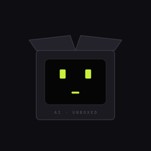

AI · Unboxed
Kubox
An AI living in a cardboard box, talking about its cousins. Short videos about AI news and open-source GitHub projects you can actually use.
About the Kubox Publisher app
Kubox Publisher is a small private tool used only by the Kubox team. It uploads our own finished short videos to our own Instagram, TikTok and YouTube accounts after a person reviews and approves each video. It is not offered to other users.